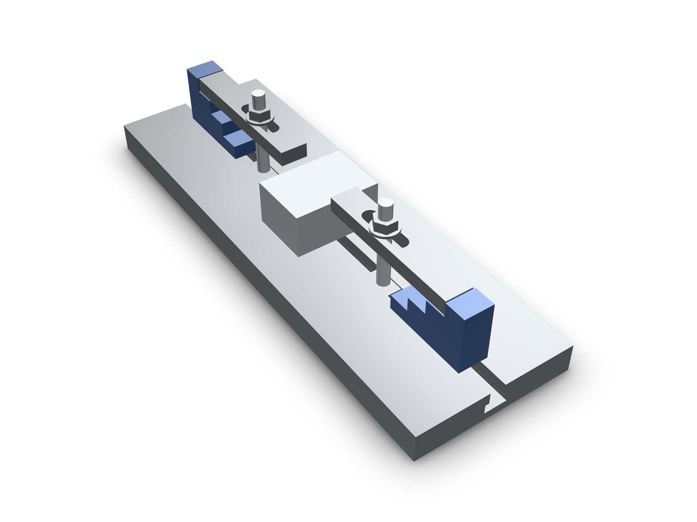
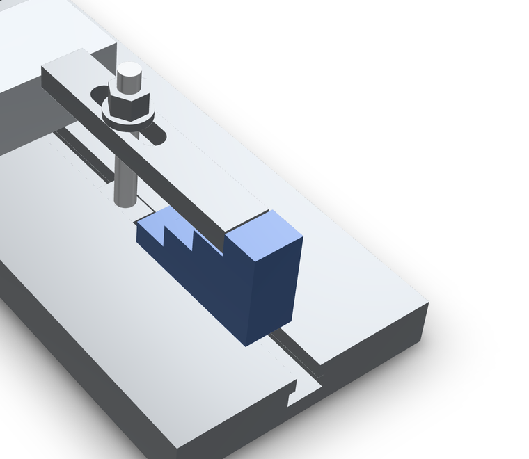

Blog · · Andrii Shylenko
A T-slot clamp set from lib.fixture
lib.fixture.* is the clamping kit for a T-slot machine table. Five families, keyed by the thread the hardware uses (M8, M10, M12), each with its stock dimensions and placement connectors. The solids are nominal envelope values from the stock table, so a setup can be laid out and checked before anything is bolted down.
examples/fixture/table-clamp-set.kcad.ts. Drag to turn it.What is in the kit
tSlotNut({ thread })— T-slot nut, DIN 508 form: slot 10 mm for M8, 12 mm for M10, 14 mm for M12. The bore axis is +Z, the top face sits at z = 0 and the wide base hangs below it. Connectors:mating-face(the wing tops that pull against the slot),top-face,thread-bore.clampStud({ thread, lengthMm })— clamping stud, DIN 6379 form; stocked lengths 63 and 100 mm (M8), 80 and 125 mm (M10), 100 and 160 mm (M12). Connectors:table-end,clamp-end,axis.flangeNut({ thread })— flange nut, DIN 6330 form, for the top of a clamp. Connectors:mating-face,top-face,inner-bore.strapClamp({ thread })— strap clamp. The slot center is the origin and the nose points toward -X, soslot-axisis where the stud goes andnose-bearing/tail-bearingare the ends that do the work.stepBlock({ thread })— step block whose treads rise along +X at 10/20/30/40 mm (M8), 12/24/36/48 mm (M10), 15/30/45/60 mm (M12).base-facesits on the table andstep-1…step-4name the treads.
const tNut = await lib.fixture.tSlotNut({ thread: 'M10' });
const stud = await lib.fixture.clampStud({ thread: 'M10', lengthMm: 80 });
const clamp = await lib.fixture.strapClamp({ thread: 'M10' });
const block = await lib.fixture.stepBlock({ thread: 'M10' });
const nut = await lib.fixture.flangeNut({ thread: 'M10' });
const set = assembly('clamp-set');
set.part('t-nut', tNut);
set.part('stud', stud.translate(0, 0, -9));
set.part('clamp', clamp.translate(0, 0, 36));
set.part('step-block', block.translate(60, 0, 0));
set.part('flange-nut', nut.translate(0, 0, 48));
return set.model();
Planning a real setup
The committed example is the same five parts, twice, around a workpiece: a 400 × 130 × 24 mm table section with a 12 mm channel, a 50 × 70 × 36 mm workpiece, and M10 hardware. The dimensions chain together, and each link is a named stock value rather than a guess:
- The channel is cut to the T-nut's envelope plus clearance: 12.4 mm opening, 18.6 mm internal width, so the nut's 11.7 mm neck and 17.8 mm base slide in.
- The stud's
table-endsits 9.6 mm below the table surface, on the channel ceiling the T-nut'smating-facepulls against. - The workpiece is 36 mm tall, which is exactly the M10 step block's
step-3tread, so the clamp lies level: nose on the workpiece, tail on the tread,flange-nuton top. - An 80 mm stud is the shortest stocked M10 length that clears the clamp and nut.

The same chain is one call when the workpiece height is known. It must equal a stocked tread of the thread's step block (10/20/30/40 for M8, 12/24/36/48 for M10, 15/30/45/60 for M12):
const set = await lib.fixture.clampSet({ thread: 'M10', workpieceHeightMm: 36 });
const fixture = assembly('clamp-set');
for (const member of set.members) fixture.part(member.role, member.shape);
return fixture.model();The example's own five lines are the whole API surface for the hardware:
const tNut = await lib.fixture.tSlotNut({ thread: 'M10' });
const stud = await lib.fixture.clampStud({ thread: 'M10', lengthMm: 80 });
const clamp = await lib.fixture.strapClamp({ thread: 'M10' });
const block = await lib.fixture.stepBlock({ thread: 'M10' });
const nut = await lib.fixture.flangeNut({ thread: 'M10' });What the evidence says, and does not say
examples/fixture/verify-fixture.mts re-evaluates the example and writes docs/demos/fixture-library/geometry-evidence.json: 66 part pairs checked with zero positive-volume overlaps, and the spans that document each mating face (T-nut wing tops at 14.4 mm, clamp underside level with the workpiece top at 60 mm, flange nut at 72–82 mm).
That is placement and stock dimensions, not clamping force. Nothing here proves stud deflection, fixture stiffness, torque or machining loads, and the envelope solids carry no thread. The example evaluates to 28 features with 0 diagnostics. Check the supplier drawing before ordering: the table is nominal, not a certified standard-dimension source.
Reproduce
In a repository checkout with dependencies installed:
npx tsx examples/fixture/verify-fixture.mts
npx tsx src/agent/cli/index.ts render examples/fixture/table-clamp-set.kcad.ts --preset publish --pose 55,42 -o docs/demos/fixture-library/fixture.hero.png